The Many Worlds of Schrödinger's Cat
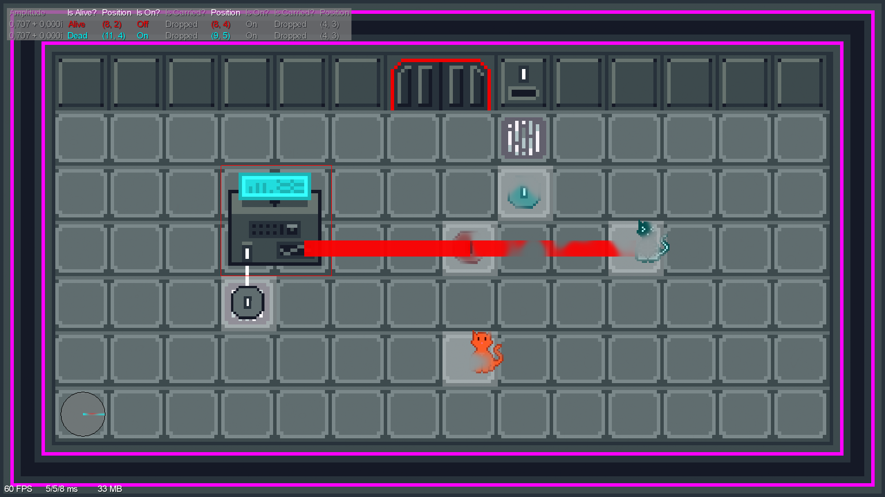I hope this talk will:
Make a game about a cat
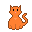
Superposition is a quantum puzzle game started by me and Rory Soiffer in summer 2019.
You can be both alive and dead!
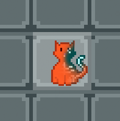
Everything looks normal...
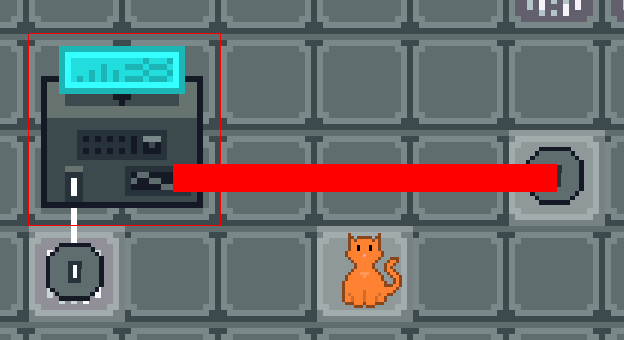...until you add superposition.
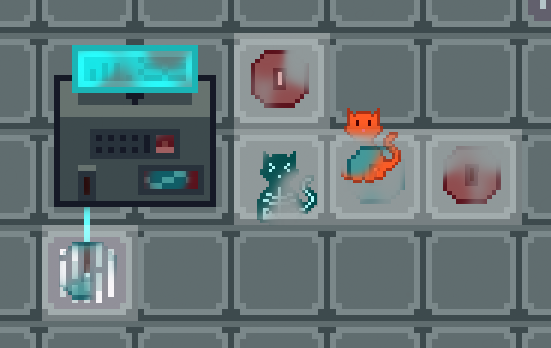Superposition is a mathematically accurate quantum simulation.
That means every action is unitary.
Intuition: Every action in the game preserves quantum information and can always be reversed by another action.
Lasers kill the cat.
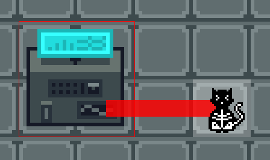But they also bring him back to life!
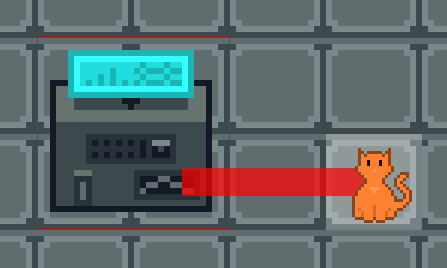Lasers apply the X gate to anything they hit.
Every action is reversible. In theory, you can't get stuck. 😉
...but we still have a reset button.
Unitarity means some actions are impossible.
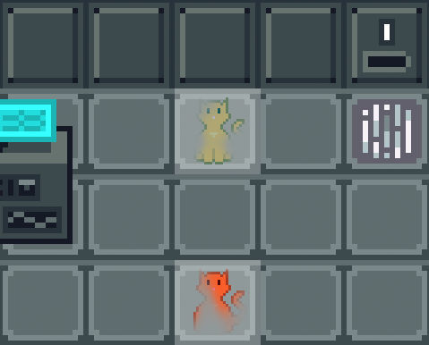Measurement isn't unitary, so we don't have it!
The door is locked...
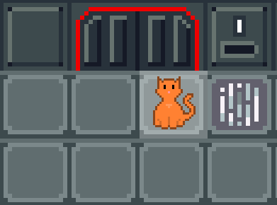It can be unlocked with a quball in the right state.
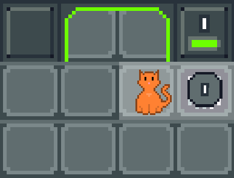What is part of the quantum state, and what isn't?
Pixel position and animation timers aren't part of the quantum state.
But they can still depend on the quantum state.
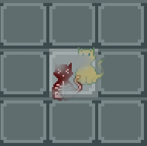A basis state corresponds to a probability amplitude.
\[ |\textrm{Alive}\rangle \to \frac{1}{\sqrt{2}} \quad\quad |\textrm{Dead}\rangle \to \frac{1}{\sqrt{2}} \]
We say that it also corresponds to a set of metadata.
\begin{align*} |\textrm{Alive}\rangle &\to \left(\frac{1}{\sqrt{2}}, \{ \textrm{Pixel} \to (10, 12) \}\right) \\ |\textrm{Dead}\rangle &\to \left(\frac{1}{\sqrt{2}}, \{ \textrm{Pixel} \to (25, 52) \}\right) \end{align*}
We call this combination—basis state, probability amplitude and metadata—a universe.
The complete quantum state is the multiverse.
Pixel position is metadata, but a cell position is a qudit.
\[ |\textrm{Cat}\rangle = |\textrm{Alive}\rangle \otimes |(2, 0)\rangle \]
val alive = allocate(initialValue = true)
val cell = allocate(initialValue = Vector2(2, 0))
\[ 14 \times 6 = 84\;\textrm{possible positions} \]
\[ \begin{align*} &84\;\textrm{positions for cat} \\ \times\;&2\;\textrm{states for cat alive/dead} \\ \times\;&84\;\textrm{positions for quball} \\ \times\;&2\;\textrm{states for quball on/off} \\ =\;&28,224\;\textrm{components in state vector} \end{align*} \]
\[ \begin{align*} &28,224 \\ \times\;&(84 \times 2)^3 \\ =\;&133,827,821,568\;\textrm{components} \end{align*} \]
\[ |\psi\rangle = \begin{pmatrix} 1/\sqrt{2} \\ 0 \\ 0 \\ 1/\sqrt{2} \\ 0 \\ 0 \\ 0 \\ 0 \\ \vdots \end{pmatrix} \]
🚫
Most components are zero.
We only store the universes with non-zero amplitudes in a sparse vector. (For us, that's just a list.)
\[ |\psi\rangle = \left[\frac{1}{\sqrt{2}} \textrm{Universe}_1,\;\frac{1}{\sqrt{2}} \textrm{Universe}_2\right] \]
Traditionally, operations are matrices.
For us, an operation is...
trait Unitary {
def apply(universe: Universe): NonEmptyList[Universe]
def adjoint: Unitary
}
\[ |0\rangle \to [|1\rangle] \quad\quad |1\rangle \to [|0\rangle] \]
$H$
\[ |0\rangle \to \left[\frac{1}{\sqrt{2}} |0\rangle,\;\frac{1}{\sqrt{2}} |1\rangle\right] \]
\[ |1\rangle \to \left[\frac{1}{\sqrt{2}} |0\rangle,\;-\frac{1}{\sqrt{2}} |1\rangle\right] \]
| Start | $|0\rangle$ $|1\rangle$ |
| Map | $H |0\rangle$ $H |1\rangle$ |
| Expand | $|0\rangle$ $|1\rangle$ $|0\rangle$ $-|1\rangle$ |
| Simplify | $|0\rangle$ |
Lasers aren't just an $X$ gate.
// Targets is a QExpr[List[Qubit]].
val targets = beamHits(multiverse, entity)
val unitary =
gate // The laser's gate.
.multi // Accept List[Qubit].
.onQExpr // Accept a QExpr.
.apply(targets) // Give the QExpr[List[Qubit]] to the gate.
// Map over the universes in the multiverse and simplify.
multiverse.applyUnitary(unitary)
Our puzzles need complex quantum states and operations.
We want to make levels without writing code.
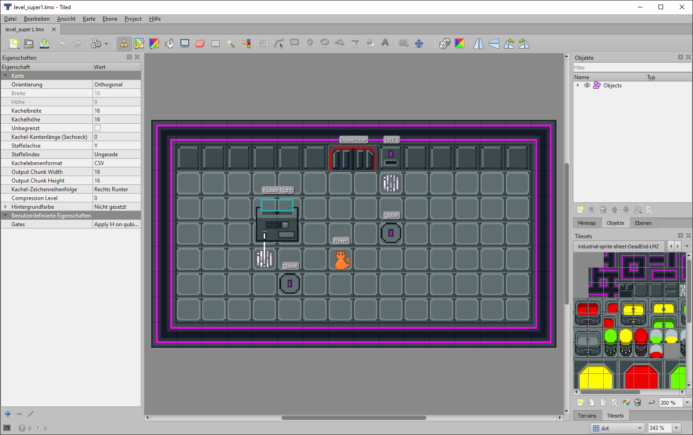
Apply H on qubit 16.
and [activeCell (9, 2), activeCell (10, 2)]
Apply Translate
on (qucell 16, vec2 (-1, 0))
if value (qubit 16).
Apply QFT on primaryAt (cell (9, 5)).
Apply Phase on 0.0625
repeat int (activated [cell (9, 5)])
repeat int (activated [cell (10, 5)]).
Apply QFT adjoint on primaryAt (cell (9, 5)).
Every expression is "quantum."
activeCell (9, 2)activeCell (universe, (9, 2))Even constants.
vec2 (-1, 0)Play Superposition
github.com/samarsha/superposition
...or help make it!